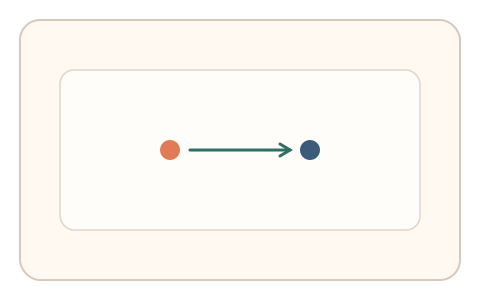
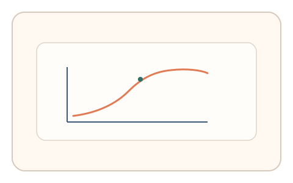

#34
视觉思考范式：时域/适应/残影
已扩展
视觉暂留顺序判别
两个点短时依次闪现，记录最小可分辨时差与错误分布作为时间顺序阈值信号。
概念原文
两个点在 30–100ms 内依次闪现，用户选择“先出现的那个”。系统记录最小可分辨时差与错误分布。
依赖时间顺序阈值与误差模式，而非图像分类。
研究背景
视觉系统对时间顺序的分辨存在阈值限制，短时差下会出现稳定的误判模式。测量时间顺序判断的阈值与错误分布，可提供稳健的时域行为特征。
核心机制
- 两个点在极短时差内依次闪现。
- 用户选择先出现的点。
- 记录判断正确率与反应时。
- 估计最小可分辨时差阈值。
用户流程
- 步骤 1：用户看到两个点快速闪现。
- 步骤 2：用户选择先出现的点。
- 步骤 3：系统拟合阈值并判定。
判定信号
最小可分辨时差阈值
人类时间分辨率具有稳定范围。
错误分布与反应时
阈值附近的错误模式具有规律性。
判定逻辑
拟合时间顺序阈值与错误分布，要求落在人类区间；阈值异常低或错误模式随机判异常。
对抗面
- 脚本读取刺激顺序直接回答
- 重放真实用户的响应序列
防御与缓解
- 随机化点位与时差范围，避免固定模式
- 加入空白掩蔽与轻微噪声干扰
- 叠加反应时与轨迹微特征进行多信号判定
可达性与风险
提供更长时差或替代任务，避免对时间分辨能力受限用户造成障碍。
- 高频闪现可能引起视觉疲劳
- 显示器刷新率限制最小可用时差
可视化状态

状态 1：短时闪现
两个点依次快速出现。
状态 2：顺序选择
用户选择先出现的点。

状态 3：阈值判定
估计时间顺序阈值与错误分布。
参考资料
Temporal order judgment
说明时间顺序判断任务与阈值。
Psychophysics
说明阈值测量的基础方法。